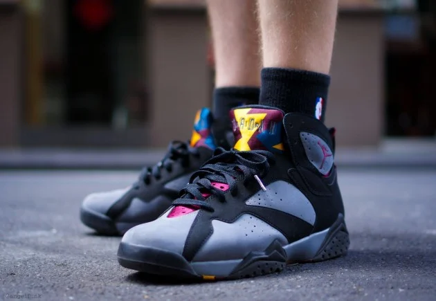

The Air Jordan 7 "Bordeaux," originally released in 1992, is a highly regarded sneaker known for its unique colorway and stylish design. It has become a classic in the Air Jordan lineup and is celebrated for its combination of performance and fashion. **Key Features:** - **Colorway**: The "Bordeaux" features a mix of black, Bordeaux (a deep red), and grey accents. The striking color palette provides a bold yet sophisticated look, making it versatile for both casual wear and athletic performance. - **Design Elements**: This model is characterized by its sleek silhouette and distinctive triangular cutouts. The Jumpman logo is prominently displayed on the tongue, while the "23" is featured on the heel. - **Materials**: Constructed from a combination of premium leather and nubuck, the Air Jordan 7 offers durability and comfort, ensuring a quality fit. - **Comfort and Performance**: Known for its lightweight construction and responsive cushioning, the Air Jordan 7 provides excellent support on the court, making it a popular choice among basketball players. - **Cultural Significance**: The "Bordeaux" colorway is iconic in sneaker culture, often associated with Michael Jordan’s legacy and his performance during the 1992 NBA season, including the Dream Team’s Olympic run. Overall, the Air Jordan 7 "Bordeaux" stands out for its stylish design, rich history, and enduring appeal, making it a must-have for sneaker collectors and enthusiasts alike.
